固定真实样本 24900

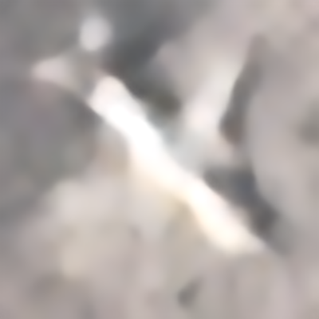
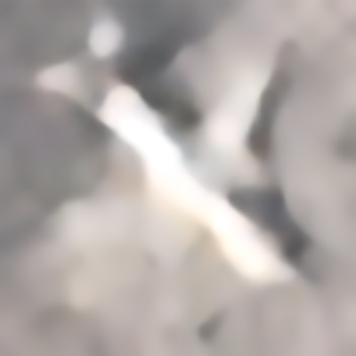
本轮实拍扩样和约10% AI混合训练都完成了2000步，但验证集最终均选回旧权重。固定五张真实20像素样本中，实际2000步模型仍主要呈现平滑轮廓，没有看到明显、稳定的飞机结构细节提升。AI未达到预设扩量门槛，因此暂不扩量，也不替换默认模型。下方展示实际2000步诊断结果，供比较训练带来的细微变化；这不等于证明AI扩样路线无效。
新增筛选实拍来源，训练池有1,185个飞机标注实例、3,499对低清／高清训练样本，其中737个实例此前未进入候选目录。输入以20×20为主，飞机长边中位数约16像素，参考图保持原生细节。变体数量、标注实例与独立飞机身份不是同一个概念。
对照组只用实拍；混合组约10%的训练抽样换为8张AI参考产生的64个变体。模型起点、2000步预算和实拍验证规则一致。AI图只进入混合训练，验证和测试均为实拍来源。
本轮未达到预设扩量门槛，因此没有继续批量生成或把AI数据并入默认模型。混合模型保留供对照。 验证集相对实拍组的ROI PSNR变化为+0.0000dB，SSIM变化为+0.00000。
两组验证集均选择第0步，所选参数与旧模型完全相同；因此表格与下方图片另列实际训练2000步的末步结果，供诊断，不代表已采纳新模型。
62对图像×两种退化；按8个来源组等权汇总。PSNR、SSIM越高越好，边缘误差越低越好。这些是有高清参考的模拟低清测试，不能当作下方真实20像素图的得分。
| 模型 | 飞机区域PSNR/dB | 灰度SSIM | 边缘误差 | 此行权重步数 |
|---|---|---|---|---|
| 上一轮起点（最终保留） | 21.7256 | 0.4991 | 0.022610 | 0 |
| 实拍训练2000步（诊断） | 21.7430 | 0.5004 | 0.022609 | 2000 |
| 实拍＋AI 2000步（诊断） | 21.7480 | 0.5008 | 0.022606 | 2000 |
两组最终都选回旧权重。下方专门展示各自训练到2,000步时的诊断模型，让你看见实际训练后的变化；它们没有被选为默认模型。两组末步模型均完成全部8,000张，加上所选权重的16,000张，共32,000份输出，页面只展示固定五张。每幅超分图均为400×400，不额外裁去飞机。拖动滑块并切换两侧模型即可比较。真实样本没有对应高清真值，细节更锐不等于细节已被证实。


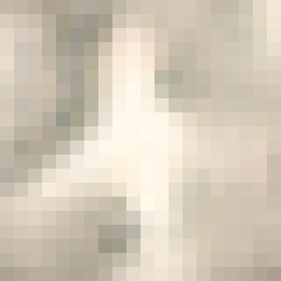
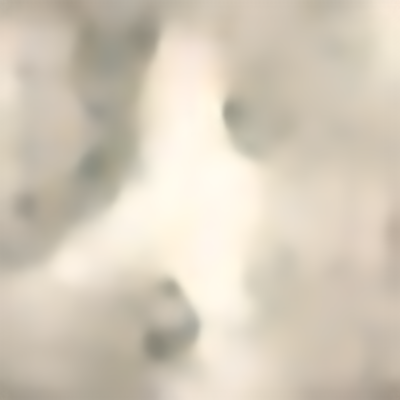
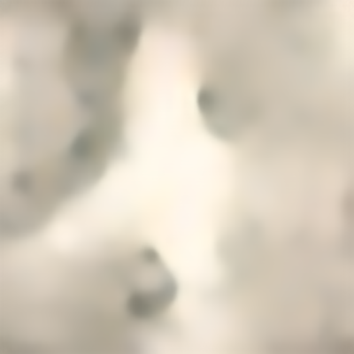
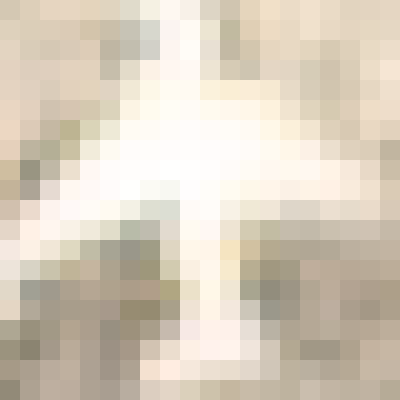

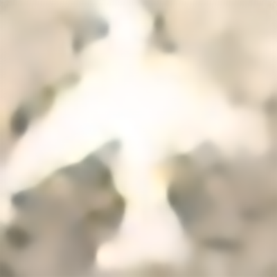

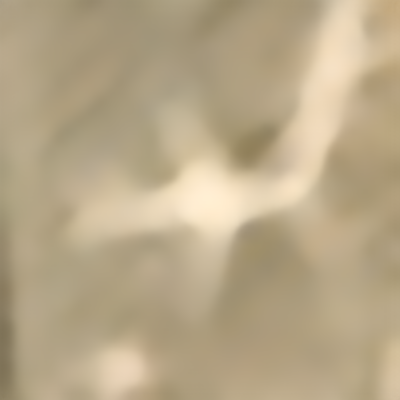


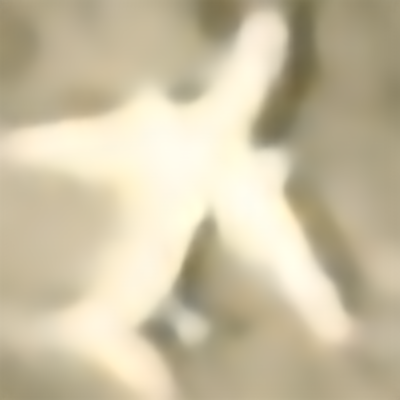
下方是五张合成训练参考及其低清版本，供理解配对方式，不是超分成果，也不是实拍照片。无需用户再标注；生成来源自动记录，具体机型未认证。
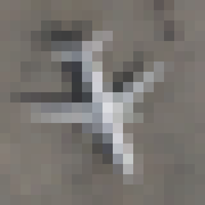
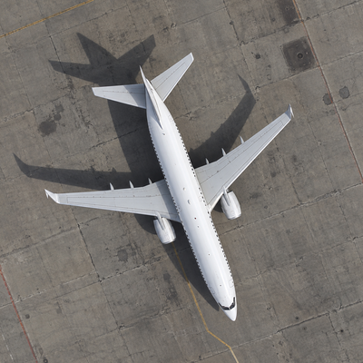
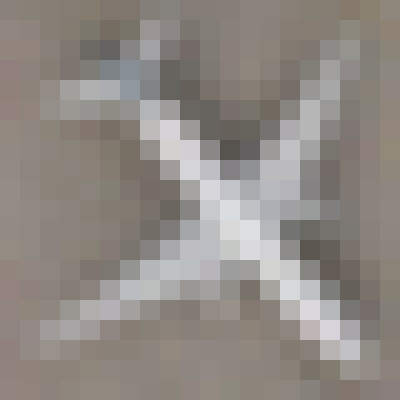
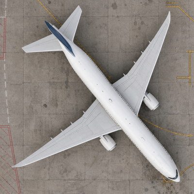
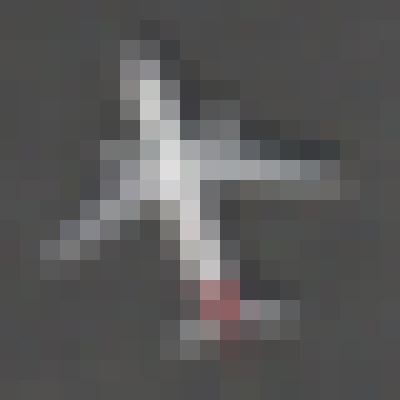
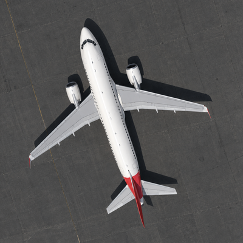
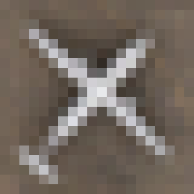
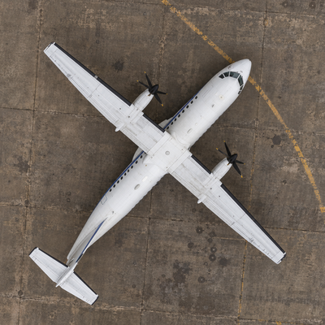
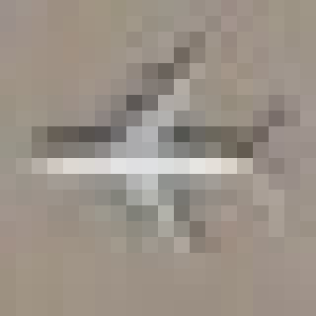
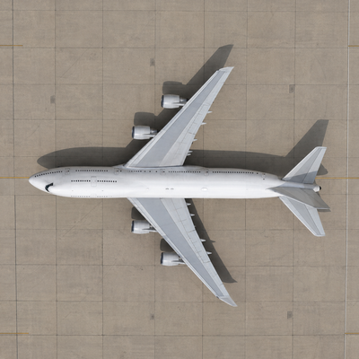